De-ashi-barai
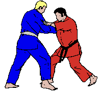
De-Ashi-Barai (auch De-Ashi-Harai) ist ein klassischer Fußfeger im Judo. Der Wurf gehört zur Gruppe der Ashi-Waza (Fuß- und Beinwürfe) und wird genutzt, um den Gegner durch das Fegen seines vorgehenden Fußes aus dem Gleichgewicht zu bringen.
Hiza-guruma
.gif)
Hiza-Guruma bedeutet „Knierad“ und ist ein klassischer Wurf aus der Gruppe der Ashi-Waza (Fuß- und Beinwürfe). Bei dieser Technik blockierst du das Knie deines Gegners, während du ihn über dieses Hindernis drehst.
Sasae-tsuri-komi-ashi
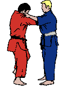
Sasae-Tsuri-Komi-Ashi bedeutet „blockierendes Angelziehen des Beins“ und gehört zur Gruppe der Ashi-Waza (Fuß- und Beinwürfe). Diese Technik nutzt das Prinzip des Blockierens, um den Gegner über sein eigenes Bein fallen zu lassen.
Uki-goshi
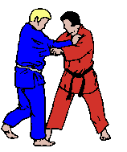
Uki-Goshi bedeutet „schwebende Hüfte“ und ist ein klassischer Hüftwurf aus der Gruppe der Koshi-Waza (Hüfttechniken). Er gilt als einer der elegantesten und effizientesten Würfe im Judo, weil er mit minimalem Kraftaufwand ausgeführt werden kann.
O-Soto-Gari
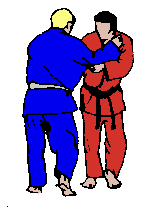
O-Soto-Gari bedeutet „großes äußeres Ausschneiden“ und ist einer der bekanntesten und effektivsten Judo-Würfe. Er gehört zur Gruppe der Ashi-Waza (Fuß- und Beinwürfe) und wird oft von Anfängern bis hin zu Profis angewendet.
O-Goshi
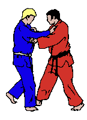
O-Goshi bedeutet „große Hüfte“ und ist einer der fundamentalsten Hüftwürfe im Judo. Er gehört zur Gruppe der Koshi-Waza (Hüfttechniken) und ist oft einer der ersten Hüftwürfe, die Anfänger lernen.
O-Uchi-Gari
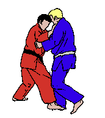
O Uchi Gari ist eine klassische große Innensichel im Judo. Dabei wird das gegnerische Bein von innen nach hinten weggesichelt, während der Oberkörper mit den Händen kontrolliert wird.
Ippon Seoi Nage
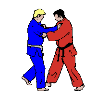
Ippon Seoi Nage ist einer der bekanntesten Schulterwürfe im Judo. Er gehört zur Seoi-Nage-Gruppe und ist besonders beliebt, weil er explosiv und effektiv ist.
Uchi Mata
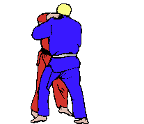
Uchi Mata ist einer der spektakulärsten Würfe im Judo. Er gehört zur Kategorie der Ashi-waza (Fuß- und Beinwürfe) und wird oft als innerer Oberschenkelwurf bezeichnet.
Koshi Guruma
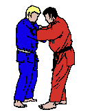
Koshi Guruma ist ein klassischer Hüftwurf (Koshi-waza) und bedeutet übersetzt "Hüftrad". Er ähnelt O-Goshi, aber anstatt die Hüfte direkt zu greifen, wird der Arm um den Nacken des Gegners gelegt.
Ko-Soto-Gari
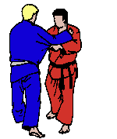
Ko Soto Gari ist ein klassischer Wurf aus der Ashi-waza (Fuß- und Beinwürfe)-Kategorie, bei dem das äußere Bein des Gegners geschnitten wird. Es ist eine der grundlegendsten und effektivsten Techniken im Judo.
Ko-Soto-Gake
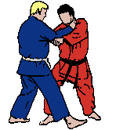
Ko Soto Gake ist ein weiterer klassischer Wurf
aus der Ashi-waza (Fuß- und Beinwürfe)-Kategorie im Judo. Er ähnelt Ko Soto Gari, aber anstatt das Bein des Gegners zu schneiden, wird hier das Bein des Gegners mit einem Hakenbewegung „gegriffen“, was ihm eine etwas andere Dynamik verleiht.
Okuri-Ashi
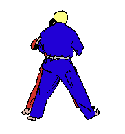
Okuri Ashi ist ein effektiver Wurf aus der Ashi-waza (Fuß- und Beinwürfe)-Kategorie im Judo. Der Name bedeutet „Seitliche Fußfegebewegung“ und ist darauf ausgelegt, das äußere Bein des Gegners seitlich zu fegen, um ihn aus der Balance zu bringen und auf den Boden zu werfen. Es ist eine Technik, die häufig in einem dynamischen Angriff eingesetzt wird.
Tai-Otoshi
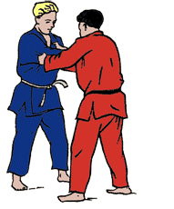
Tai Otoshi ist ein klassischer Body Drop-Wurf im Judo. Es gehört zur Kategorie der Te-waza (Handwürfe) und ist eine der effektivsten Wurftechniken, die sowohl im Wettkampf als auch im Training häufig eingesetzt wird. Bei Tai Otoshi wird der Gegner mit einer Kombination aus einem Griff und einer schnellen Körperdrehung über deinen Körper geworfen.
Tsuri-Komi-Goshi
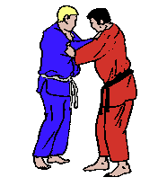
Tsuri Komi Goshi ist ein weiterer klassischer Hüftwurf (Koshi-waza) im Judo und zählt zu den grundlegenden Wurftechniken. Der Name bedeutet "Heben und Ziehen mit der Hüfte". Bei diesem Wurf wird der Gegner durch eine Kombination aus Heben, Ziehen und einer starken Hüftbewegung auf den Boden geworfen.
Ashiguruma
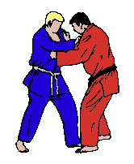
Ashi Guruma ist ein klassischer Fußwurf (Ashi-waza) im Judo, bei dem das Bein des Gegners mit einem Haken oder einer fegenden Bewegung zu Fall gebracht wird. Der Name „Ashi Guruma“ bedeutet „Fußrad“ und beschreibt die Technik, bei der das gegnerische Bein wie ein Rad weggefegt wird.
Hanegoshi
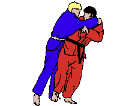
Hanegoshi ist ein klassischer Hüftwurf (Koshi-waza) im Judo, der auch als "Springender Hüftwurf" bezeichnet wird. Er gehört zu den grundlegenden Wurftechniken und zeichnet sich durch eine schnelle und explosive Bewegung aus, bei der das Bein des Gegners mit einem „Hüpfen“ über die Hüfte geworfen wird.
Harai Tsurikomi Ashi
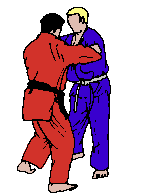
Harai Tsurikomi Ashi ist ein klassischer Fußwurf (Ashi-waza) im Judo, bei dem das gegnerische Bein durch eine kräftige fegende Bewegung von außen nach innen über das Standbein des Gegners geworfen wird. Der Name bedeutet „Fegen mit Zug und Heben des Fußes“ und kombiniert sowohl die Bewegung eines Fußhakens als auch das Zerren des Gegners.
Kata-guruma
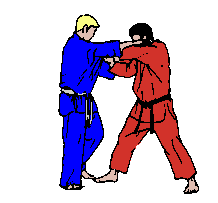
Kataguruma ist ein klassischer Hüftwurf (Koshi-waza) im Judo, der oft als "Schulterrad" oder "Schulteraufzug" bezeichnet wird. Es handelt sich um eine Technik, bei der der Gegner über deine Schulter geworfen wird. Kataguruma ist eine sehr effektive und dynamische Technik, bei der der Gegner mit der gesamten Körperkraft angehoben und dann geworfen wird.
Ko-soto-gake
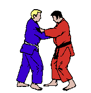
Ko Soto Gake ist ein effektiver Fußwurf (Ashi-waza) im Judo, der häufig als „kleiner Außenhaken“ bezeichnet wird. Bei dieser Technik wird das äußere Bein des Gegners mit einem Hakenbewegung von außen nach innen geworfen. Es ist eine großartige Technik, um einen Gegner zu Boden zu bringen,
insbesondere wenn er sich nach vorne lehnt oder das Gewicht auf einem Bein hat.
Tomoe-nage
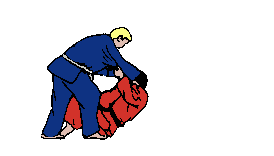
Tomoe Nage ist ein klassischer Hüftwurf (Koshi-waza) im Judo, der als "Kreiswurf" oder "Radwurf" bezeichnet wird. Diese Technik gehört zu den spektakuläreren und effektiveren Wurftechniken und wird verwendet, um den Gegner über den Kopf oder die Schultern zu werfen. Es handelt sich dabei um eine sehr dynamische Technik, die eine gute Kombination aus Hüftbewegung und Beinarbeit erfordert.
Tsurigoshi
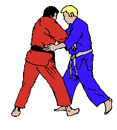
Tsurigoshi ist ein Hüftwurf (Koshi-waza) im Judo, der auch als „Heben und Wurf mit der Hüfte“ bezeichnet wird. Diese Technik erfordert eine Kombination aus einem starken Zug und einer kräftigen Hüftbewegung, um den Gegner zu heben und zu werfen. Sie ist besonders nützlich, wenn der Gegner relativ nah an dir ist, und erfordert präzises Timing und Technik.
Yoko-otoshi
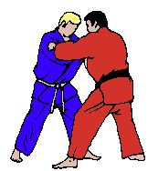
Yoko Otoshi ist ein seitlicher Wurf (Yoko-waza) im Judo, bei dem der Gegner durch eine seitliche Bewegung zu Boden geworfen wird. Der Name bedeutet wörtlich „seitliches Fallenlassen“ und beschreibt, wie der Gegner seitlich abgeworfen wird, meistens mit einer starken Hebe- oder Wurfbewegung, die eine seitliche Kontrolle ausnutzt.
Hane-maki-kom
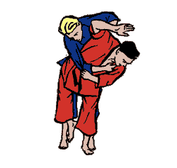
Hane-Maki-Komi ist ein spezieller Wurf aus der Gruppe der Koshi-Waza (Hüfttechniken) und gehört zu den eher dynamischen und fortgeschrittenen Judo-Techniken. Der Name bedeutet „Springende Rollbewegung“ und beschreibt die Bewegung, bei der der Gegner über die Hüfte geworfen wird, während du eine Art "Sprungbewegung" machst.
Oguruma
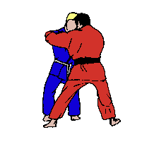
O-Guruma bedeutet „großes Rad“ und ist ein klassischer Wurf aus der Gruppe der Koshi-Waza (Hüfttechniken). Der Wurf nutzt die Hüfte und eine Drehbewegung, um den Gegner über den Rücken zu werfen. Der Name "O-Guruma" bezieht sich auf das Bild, das beim Wurf entsteht – der Gegner wird über die Hüfte hinweg „gerollt“, ähnlich einem Rad.
Sukui-Nage
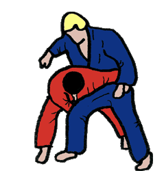
Sukui-Nage ist ein Wurf aus der Gruppe der Te-Waza (Handwürfe), und der Name bedeutet „Schöpfen“ oder „Greifen und Werfen“. Der Wurf ähnelt einem „Schöpfen“-Bewegung, bei dem du den Gegner mit einem „Schöpfen“ über deine Hüfte wirfst.
Soto-maki-komi
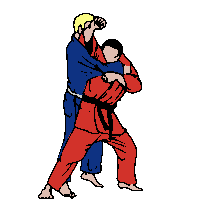
Soto-Maki-Komi bedeutet „äußeres Einrollen“ und ist ein Wurf aus der Gruppe der Koshi-Waza (Hüfttechniken). Dieser Wurf ist eine Technik, bei der du deinen Gegner über deine Hüfte wirfst, indem du seine Arme nach außen rollst und gleichzeitig die Drehbewegung deiner Hüfte nutzt.
SumiGaeshi
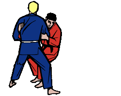
Sumi-Gaeshi bedeutet „Eckenkontrolle“ oder „Eckwurf“ und ist ein sehr effektiver Wurf aus der Gruppe der Sutemi-Waza (Würfe, bei denen der Wurfende sich selbst in den Boden fallen lässt). Es handelt sich um eine Kontertechnik, bei der du deinen Gegner auf die Erde wirfst, indem du ihn über deine Schulter und Hüfte rollst. Der Wurf nutzt die Bewegungen und das Gewicht des Gegners, um ihn zu Boden zu bringen
Tani-otoshi
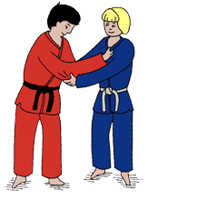
Tani-Otoshi bedeutet „Talsturz“ und gehört zur Gruppe der Sutemi-Waza (Würfe, bei denen der Wurfende sich selbst auf den Boden fallen lässt). Es ist ein sehr effektiver Wurf, bei dem du deinen Gegner in ein tiefes „Tal“ fällst, indem du ihn mit einem tiefen Griff und einer Drehbewegung auf den Boden bringst.
Ukiotoshi
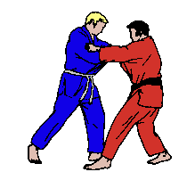
Uki-Otoshi ist eine Wurftechnik aus der Kategorie Sutemi-Waza (selbstfallende Würfe) und gehört zur Gruppe der Te-Waza (Handwürfe). Der Name „Uki-Otoshi“ bedeutet „schwebender Fall“ oder „schwebender Sturz“, was die Art und Weise beschreibt, wie der Gegner über deine Hände und Arme geworfen wird, als würde er „schweben“ und dann auf den Boden fallen.
Utsurigoshi
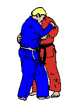
Utsuri-Goshi ist eine Hüfttechnik aus der Gruppe der Koshi-Waza (Hüftwürfe), bei der der Wurfende seine Hüfte nutzt, um den Gegner zu heben und zu werfen. Der Name "Utsuri-Goshi" lässt sich als „Bewegung der Hüfte“ oder „Hüftumsetzung“ übersetzen, was darauf hinweist, dass der Wurf eine starke Hüftdrehung erfordert.
Osoto-guruma
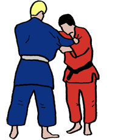
O-Soto-Guruma ist eine Wurftechnik aus der Gruppe der Koshi-Waza (Hüftwürfe) und gehört zu den traditionellen Judo-Techniken. Der Name „O-Soto-Guruma“ lässt sich als „großes äußeres Rad“ übersetzen, wobei der „Rad“-Teil auf die Drehbewegung hinweist, die beim Wurf ausgeführt wird. Es handelt sich um eine Technik, bei der der Gegner mit einer Kombination aus einem äußeren Beinstellen und einer Hüftbewegung in eine Drehung gebracht und zu Boden geworfen wird.
Sumi-otoshi
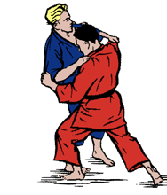
Sumi-Otoshi ist ein Wurf aus der Gruppe der selbstfallenden Würfe, bei dem der Gegner mit einer Drehbewegung über die Hüfte und Schultern geworfen wird. Der Wurfende lässt sich dabei selbst auf den Boden fallen. Der Name „Ecksturz“ bezieht sich darauf, wie der Gegner mit einer kontrollierten Bewegung zu Boden gebracht wird.
Ukiwaza
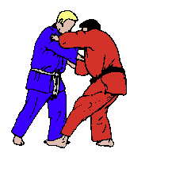
Uki-Waza ist eine Wurftechnik, bei der der Gegner durch eine Kombination aus dem Brechen seines Gleichgewichts und einer schnellen Hüftbewegung geworfen wird. Ziel ist es, den Gegner zu destabilisieren und dann schnell einen Wurf auszuführen, wobei der Fokus auf Kontrolle und einer fließenden Ausführung liegt.
Uranage
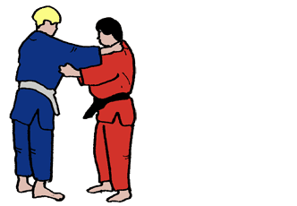
Uranage ist eine Wurftechnik, bei der der Gegner über den eigenen Rücken geworfen wird. Es handelt sich um einen kraftvollen und überraschenden Wurf, bei dem der Wurfende seinen Gegner durch eine Kombination aus Hebelwirkung und Körperdrehung über den eigenen Rücken auf den Boden bringt.
Ushirogoshi
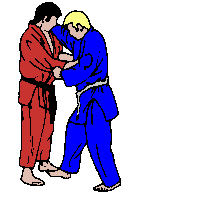
Ushiro-Goshi ist eine Wurftechnik, bei der der Gegner durch eine Drehbewegung über die Hüfte des Wurfenden geworfen wird. Der Name „Ushiro-Goshi“ bedeutet „hintere Hüfte“ und beschreibt die Art und Weise, wie der Wurf mit der Hüfte des Wurfenden ausgeführt wird, wobei der Gegner hinter einem geworfen wird.
Yokogake
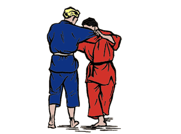
Yokogake ist eine Wurftechnik, bei der der Gegner durch eine seitliche Bewegung über die Hüfte oder das Bein des Wurfenden geworfen wird. Der Name „Yokogake“ bedeutet „seitlicher Wurf“ und beschreibt die Art und Weise, wie der Gegner seitlich aus seiner Balance gebracht wird.
Yokoguruma
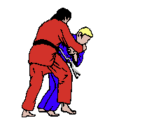
Yokoguruma ist eine Wurftechnik, bei der der Gegner mit einer seitlichen Bewegung über die Hüfte geworfen wird, ähnlich wie bei anderen Hüfttechniken, aber mit einer stärkeren Betonung auf einer seitlichen Drehung. Der Name „Yokoguruma“ bedeutet „seitliches Rad“ und beschreibt die Bewegung, die beim Wurf ausgeführt wird – eine Art Drehung, bei der der Gegner über die Hüfte des Wurfenden geworfen wird.
Yoko-wakare
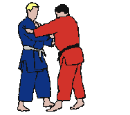
Yoko-Wakare ist eine weniger verbreitete Wurftechnik, bei der der Gegner mit einer seitlichen Drehbewegung über die Hüfte geworfen wird, ähnlich wie bei anderen Hüftwürfen. Der Name „Yoko-Wakare“ bedeutet „seitliche Trennung“ und beschreibt die Bewegung, bei der der Gegner durch eine gezielte Drehung des Körpers aus seiner Position herausgebracht und zu Boden geworfen wird.
DakiWakare
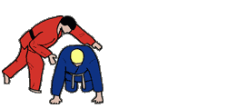
Daki-Wakare ist eine Wurftechnik, bei der der Gegner durch eine Kombination aus einer Umklammerung und einer Drehbewegung über die Hüfte geworfen wird. Der Name „Daki-Wakare“ bedeutet „Umklammerung und Trennung“ und beschreibt die Art und Weise, wie der Wurf ausgeführt wird – der Wurfende umklammert den Gegner, um ihn zu kontrollieren, und trennt ihn dann durch die Wurfbewegung.
Hikkomi-gaeshi
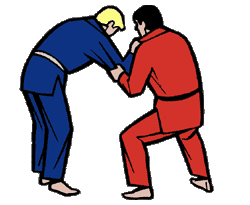
Hikkomi-Gaeshi ist eine Wurftechnik, bei der der Gegner mit einer Drehbewegung über den eigenen Körper geworfen wird, indem du ihn hinter dir umdrehst. Der Name „Hikkomi-Gaeshi“ bedeutet „Zurückziehen und Umkehren“ und beschreibt die Art der Technik, bei der der Wurfende eine Art Rückwärtsbewegung mit einer Drehung kombiniert, um den Gegner zu werfen.
Obi-otoshi
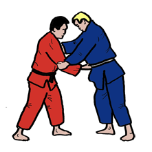
Obi-Otoshi ist eine Wurftechnik, bei der der Gegner mit einer schnellen und kraftvollen Bewegung über den eigenen Körper geworfen wird, während der Wurfende den Gürtel des Gegners (Obi) nutzt, um ihn zu kontrollieren und zu werfen. Der Name „Obi-Otoshi“ bedeutet „Gürtelwurf“ und beschreibt die Art und Weise, wie der Wurf mit einem Griff am Gürtel des Gegners ausgeführt wird.
O-soto-otoshi
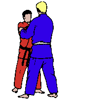
O-Soto-Otoshi ist eine Wurftechnik, bei der der Gegner durch eine kontrollierte seitliche Bewegung und eine Hebelwirkung über das Bein des Wurfenden geworfen wird. Der Name „O-Soto-Otoshi“ bedeutet „großer äußerer Fall“ und beschreibt eine Technik, bei der der Gegner mit einer äußeren Hebelbewegung zu Boden gebracht wird, nachdem sein Gleichgewicht gestört wurde.
Seoi-otoshi
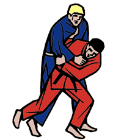
Seoi-Otoshi ist eine Wurftechnik, bei der der Gegner mit einer schnellen und kontrollierten Bewegung über die Schulter des Wurfenden geworfen wird. Der Name „Seoi-Otoshi“ bedeutet „Schulterfall“ und beschreibt die Technik, bei der der Gegner durch eine Schulterbewegung nach unten und zu Boden gebracht wird.
Tawara-gaeshi
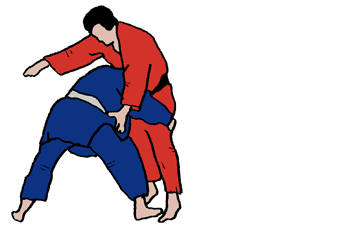
Tawara-Gaeshi ist eine Wurftechnik, bei der der Gegner mit einer Drehbewegung und einem gezielten Hebel über die Hüfte geworfen wird. Der Name „Tawara-Gaeshi“ bedeutet „Reisbalg-Wendung“ und bezieht sich auf eine Bewegung, bei der der Wurfende den Gegner umdreht und dann über die Hüfte wirft, ähnlich wie man einen Balg umdreht.
Uchi-maki-komi
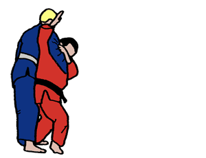
Uchi-Maki-Komi ist eine Wurftechnik, bei der der Gegner durch eine Drehbewegung über die Hüfte geworfen wird, wobei ein kontrollierter Griff am Körper des Gegners genutzt wird. Der Name „Uchi-Maki-Komi“ bedeutet „innerer Wickelwurf“ und beschreibt die Art der Technik, bei der der Wurfende den Gegner mit einer kräftigen Drehbewegung in die Mitte zieht und über seine Hüfte wirft.
Yama-arashi
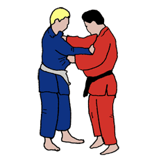
Yama-Arashi ist eine Wurftechni, bei der der Gegner mit einer Drehbewegung über den Körper des Wurfenden geworfen wird, oft unter Ausnutzung eines bestimmten Griffes. Der Name „Yama-Arashi“ bedeutet „Bergsturm“ und beschreibt die starke, kraftvolle Bewegung, die nötig ist, um den Gegner zu Boden zu bringen, ähnlich einem Sturm, der über einen Berg hinwegzieht.